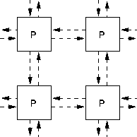

Processors can be interconnected in a number of ways, see Figures 15 and 16:

Figure 15: A 2D Processor Grid
Figure 16: A 1D Processor Chain
Data is distributed (or `overlaid') onto the processor grids.
A more complex configuration is a hypercube. This is similar to a 2x2x2 cube except it is constructed in much more than 3 dimensions.